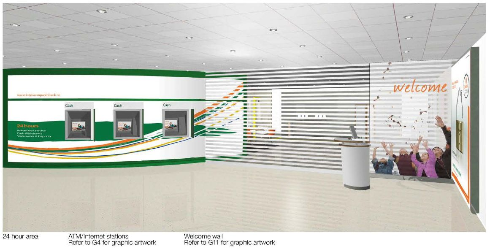

Branding Manual and Technical Specifications for the Commercial Registry and Notary Offices
Advisory project · Egypt
Branding manual and technical specifications for commercial registry and notary offices, part of Egypt's national public-private partnership programme to upgrade government services, for the Ministry of Finance and the Ministry of Telecommunication, with Ernst & Young and SE & Partners.
Partners
Ernst & YoungSE & Partners
Client
Ministry of Finance and Ministry of Telecommunication
More from Egypt
 Sumou Boulevard, New CairoMostakbal City, New Cairo · 2026
Sumou Boulevard, New CairoMostakbal City, New Cairo · 2026 Cairo Media CityGiza · 2026
Cairo Media CityGiza · 2026 New Administrative Capital: Strategic Advisory, Phases 2 to 4New Administrative Capital · 20252020Golden GateNew Cairo · 2020-20212011Regional Vision for the North Coast and Tourism Development Master Plan for Fuka-MatrouhFuka-Matrouh sub-region, North Coast · 2011
New Administrative Capital: Strategic Advisory, Phases 2 to 4New Administrative Capital · 20252020Golden GateNew Cairo · 2020-20212011Regional Vision for the North Coast and Tourism Development Master Plan for Fuka-MatrouhFuka-Matrouh sub-region, North Coast · 2011 Al Alamein Riviera Vision Master PlanNorth Coast (New Alamein) · 2022
Al Alamein Riviera Vision Master PlanNorth Coast (New Alamein) · 2022